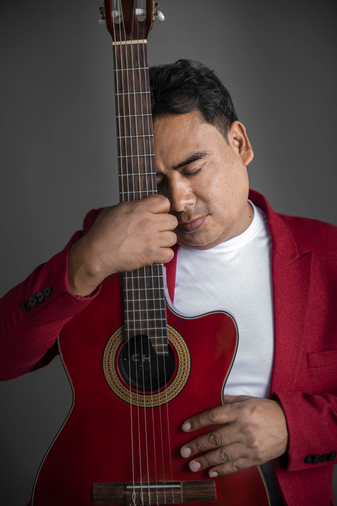
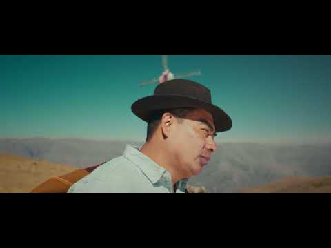

GRUPO INTERNACIONAL SIN FRONTERAS
Carlos Kury
Artista y compositor de Música Andina Contemporánea
25 años de trayectoria artística, ha paseado su arte por escenarios nacionales e internacionales.
CARLOS KURY
Galería
Retratos de Carlos Kury y su identidad musical.

Biografía
Carlos Kury nació en la villa primaveral de Ocobamba – Apurímac es uno de los grandes referentes de la música peruana y latinoamericana. Cantautor y compositor, ha construido una trayectoria marcada por canciones que conectan con su público.
Su música combina las vivencias de su juventud, la sensibilidad del campo, historias y sonidos que brotan de su corazón, creando una propuesta de huayno que acarician el alma y otros que hacen bailar, carnavales jocosos y temas para dedicar.
Su pasión por la música le ha permitido compartir escenario con grandes intérpretes de su época y gozar del aplauso de los referentes del huayno de oro, su gran sensibilidad y voz peculiar lo ha llevado a realizar colaboraciones artísticas.
Su carrera con más de dos décadas de trayectoria lo han llevado a escenarios internacionales como: Bolivia, Argentina, Chile y Brasil, interpretando y compartiendo nuevas canciones, manteniendo intacta su pasión por la música y por conectar con su público.
Plataformas digitales
Música
Decide De Una Vez
Cansado de sufrir
Roncito Cartavio
Cervecita
Vengo Solterito
Videos
Hasta Siempre Yanaca
Abrir en YouTube ↗
Hasta Siempre Yanaca (2006)
Abrir en YouTube ↗Sirenayan (Carnavales)
Abrir en YouTube ↗Si Lloras Por Mi (Huayno)
Abrir en YouTube ↗Rio Churin (Huayno)
Abrir en YouTube ↗Ponchito Rojo (Huayno)
Abrir en YouTube ↗Papel Sellado (Huayno)
Abrir en YouTube ↗Mi Mollecito (Huayno)
Abrir en YouTube ↗Con Dinero o Sin Dinero (Carnavales)
Abrir en YouTube ↗Carlos Kury / Conecta
Sígueme en
Música, historias y momentos para seguir conectados.
Contacto
Hola, te doy la bienvenida. Sigamos conectados a través de la música y el huayno peruano.
Carlos Kury